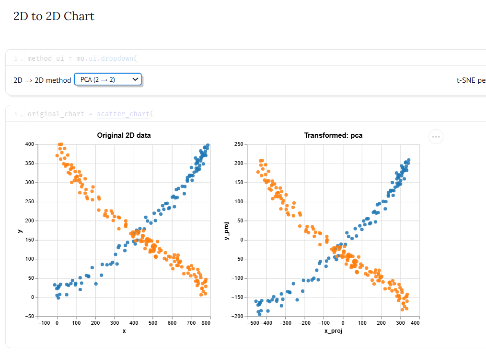
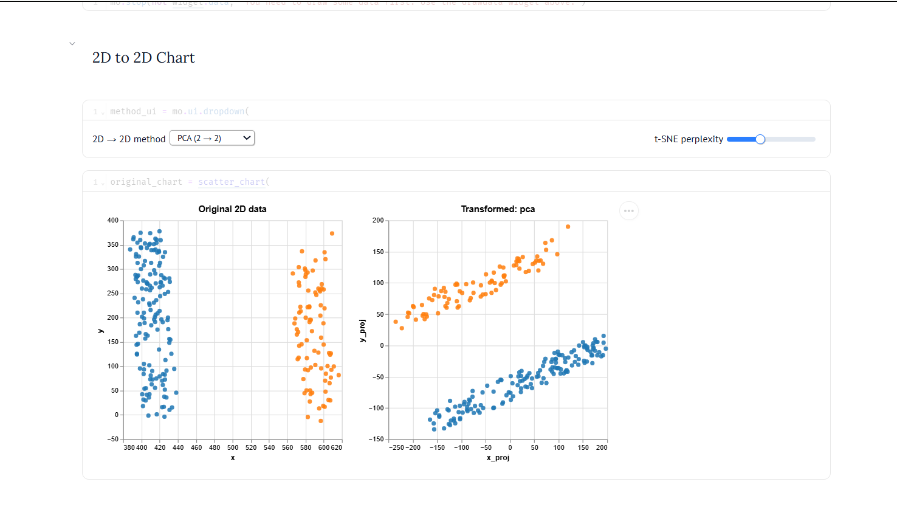
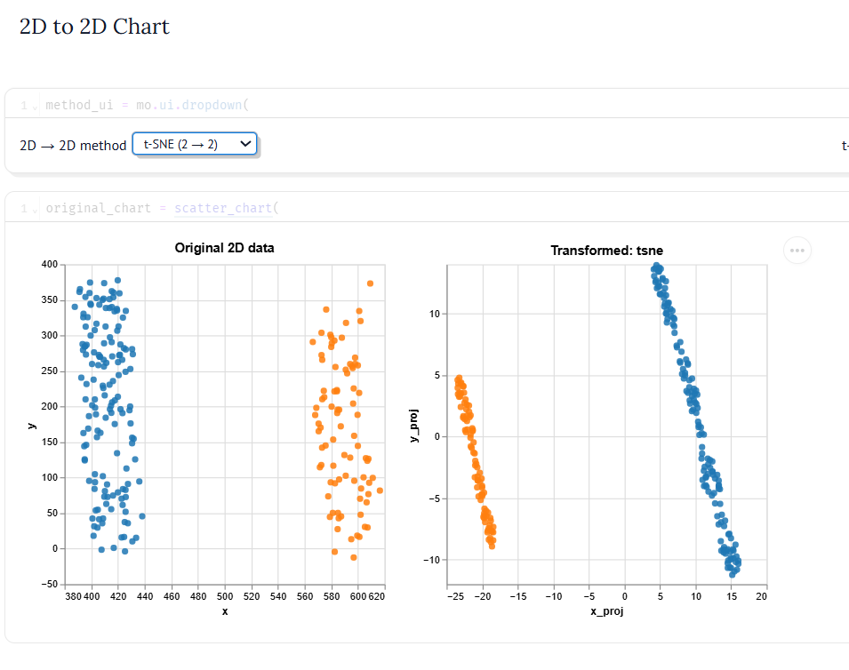
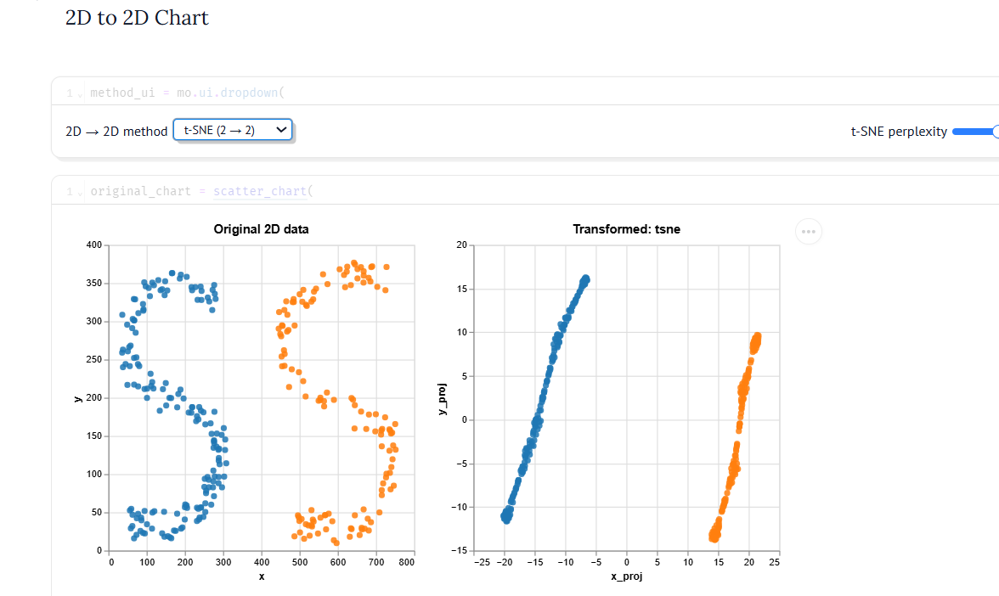
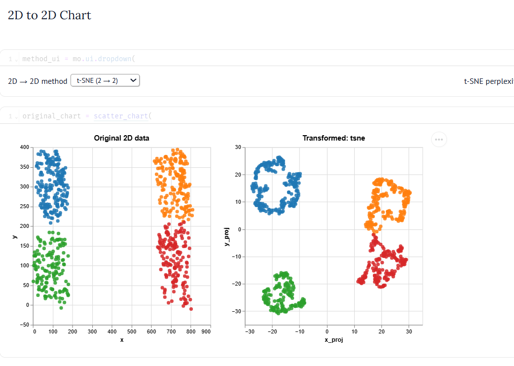
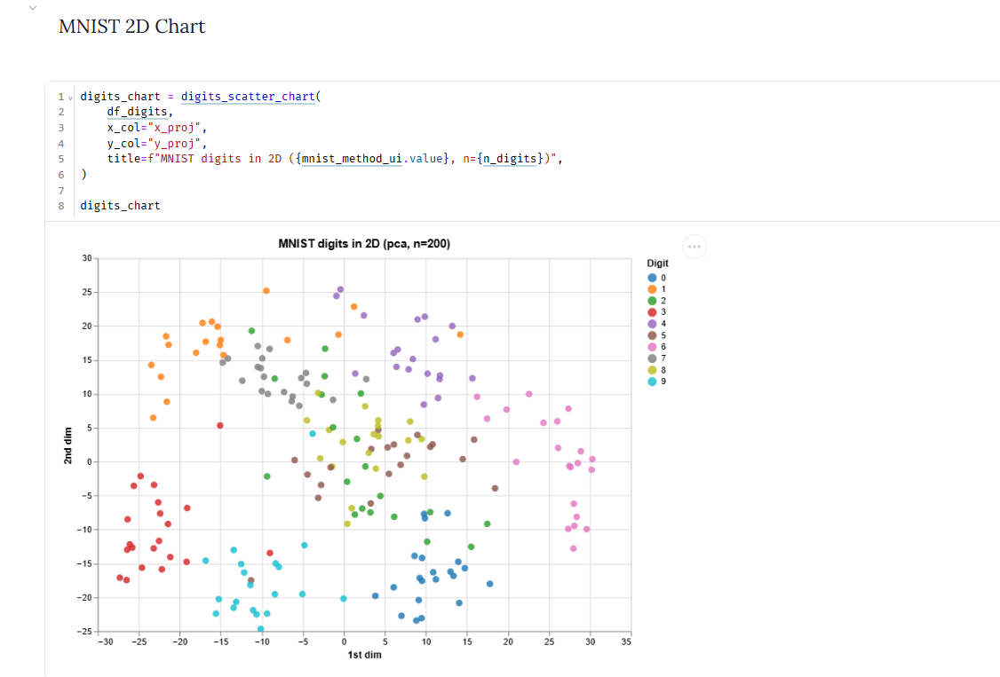
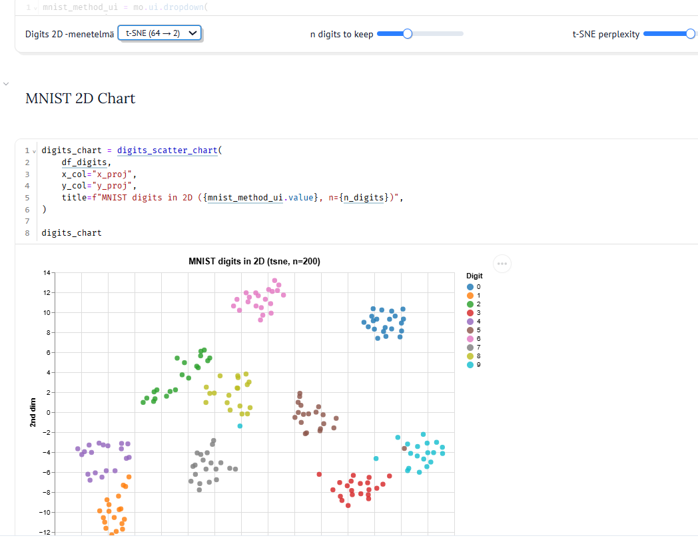
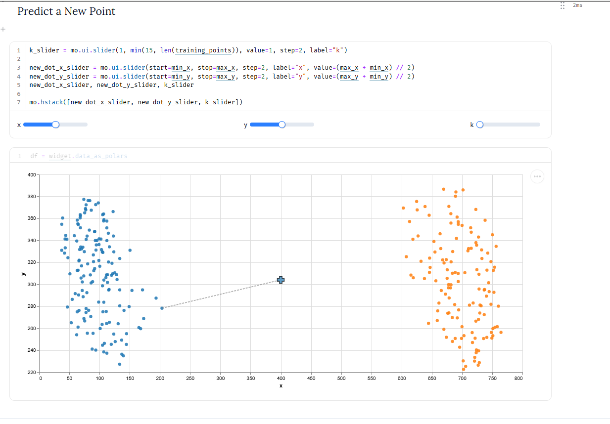
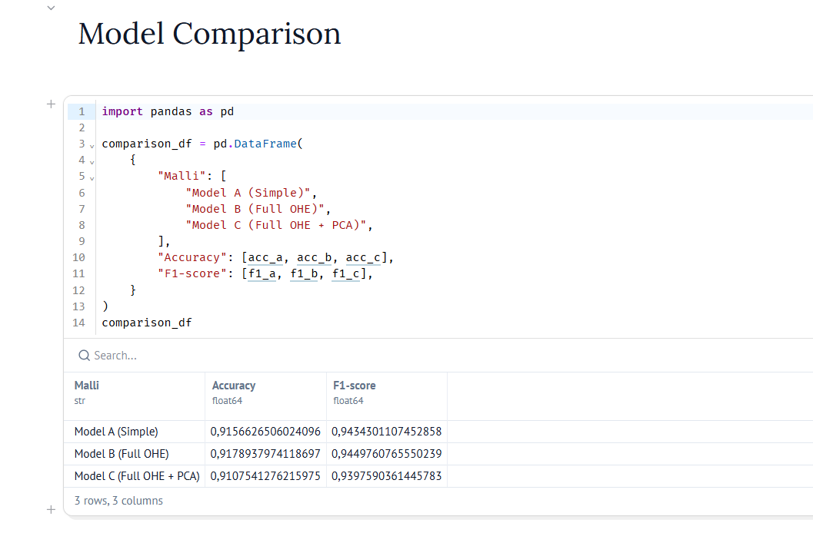

Viikko 41: Dimensiovähennys (PCA ja t-SNE)
Tällä viikolla kokeilin dimensiovähennystä kahdella eri menetelmällä: PCA:lla ja t-SNE:llä. Testasin niitä ensin Drawdata-työkalulla (2D-pisteet) ja sen jälkeen MNIST-numerodatalla.
1. Menetelmien perusidea
- PCA: Lineaarinen menetelmä. Se etsii suunnat, joissa data vaihtelee eniten, ja kääntää akselit niiden mukaan. Se säilyttää datan yleisen muodon, mutta ei toimi hyvin, jos data on mutkikasta tai käyrää.
- t-SNE: Epälineaarinen menetelmä. Se katsoo vain sitä, mitkä pisteet ovat lähellä toisiaan (naapureita). Se löytää erilliset ryhmät ja klusterit tosi hyvin.
2. Kokeet Drawdata-pisteillä
Piirsin eri muotoja ja katsoin, miten menetelmät muuttavat niitä:
Risti (X-muoto)
PCA keskittää pisteet ja kääntää ne, mutta ristin keskellä eri luokat menevät päällekkäin. PCA on suora menetelmä, joten se ei osaa erottaa leikkaavia viivoja.

Rinnakkaiset viivat (II-muoto)
PCA kääntää viivat ja säilyttää niiden suoruuden ja välin. t-SNE taas tekee kummastakin viivasta oman tiiviin nauhan. Molemmat erottavat luokat hyvin.


S-muoto (mutkitteleva viiva)
Tässä näkyy iso ero: PCA pitää S-muodon ennallaan, mutta t-SNE vetää mutkittelevan nauhan suoraksi, koska se keskittyy vain vierekkäisiin pisteisiin.

Windows-logo (4 ryhmää)
Kun pisteet ovat selkeästi omissa kulmissaan, molemmat menetelmät toimivat hyvin. t-SNE kerää ryhmät vielä tiiviimmiksi palloiksi.

3. MNIST-numerot (kuvadatan tiivistäminen)
MNIST-kuvissa on 64 pikseliä (8x8), ja ne tiivistettiin kahteen ulottuvuuteen: - PCA: Numerot ryhmittyvät vähän, mutta monet numerot menevät sekaisin, koska 2 ulottuvuutta lineaarisesti ei riitä kuville. - t-SNE: Jakaa numerot (0–9) tosi selkeiksi omiksi saarekkeiksi ilman, että malli tiesi numeroita etukäteen.


4. k-NN ja mallivertailu (Automaattivaihteet)
k-NN from Scratch
Toteutin $k$-NN-algoritmin alusta alkaen ilman valmiita koneoppimiskirjastoja. Pisteiden välinen etäisyys laskettiin euklidisella etäisyydellä. Luokitus tehtiin suoraan enemmistöpäätöksellä lähimpien naapureiden joukosta.

Automaattivaihteiden luokittelu ja PCA:n vaikutus
Vertailin tehtävässä kolmea eri $k$-NN-mallivarianttia: - Malli A (Simple): Numeeriset ja yksinkertaiset kategoriaominaisuudet ilman automerkkiä ja -mallia. - Malli B (Full OHE): Kaikki ominaisuudet mukana, myös One-Hot-enkoodatut automerkki ja -malli. - Malli C (Full OHE + PCA): Kaikki ominaisuudet, joiden dimensioita pienennettiin PCA-menetelmällä ennen luokitusta (20 komponenttia).

| Malli | Accuracy | F1-score |
|---|---|---|
| Model A (Simple) | 0.9157 | 0.9434 |
| Model B (Full OHE) | 0.9179 | 0.9450 |
| Model C (Full OHE + PCA) | 0.9108 | 0.9398 |
Onko PCA hopealuoti k-NN:lle?
Ei ole. Vaikka PCA nopeuttaa laskentaa ja tiivistää satoja One-Hot-koodattuja sarakkeita harvempaan tilaan, se samalla hävittää osan tarkasta informaatiosta. Tämän takia mallin tarkkuus ja F1-tulos laskivat hieman verrattuna suoraan One-Hot-koodattuun malliin B. Lisäksi k-NN-mallit eivät yltäneet Random Forestin huipputasoon (~0.96–0.97).